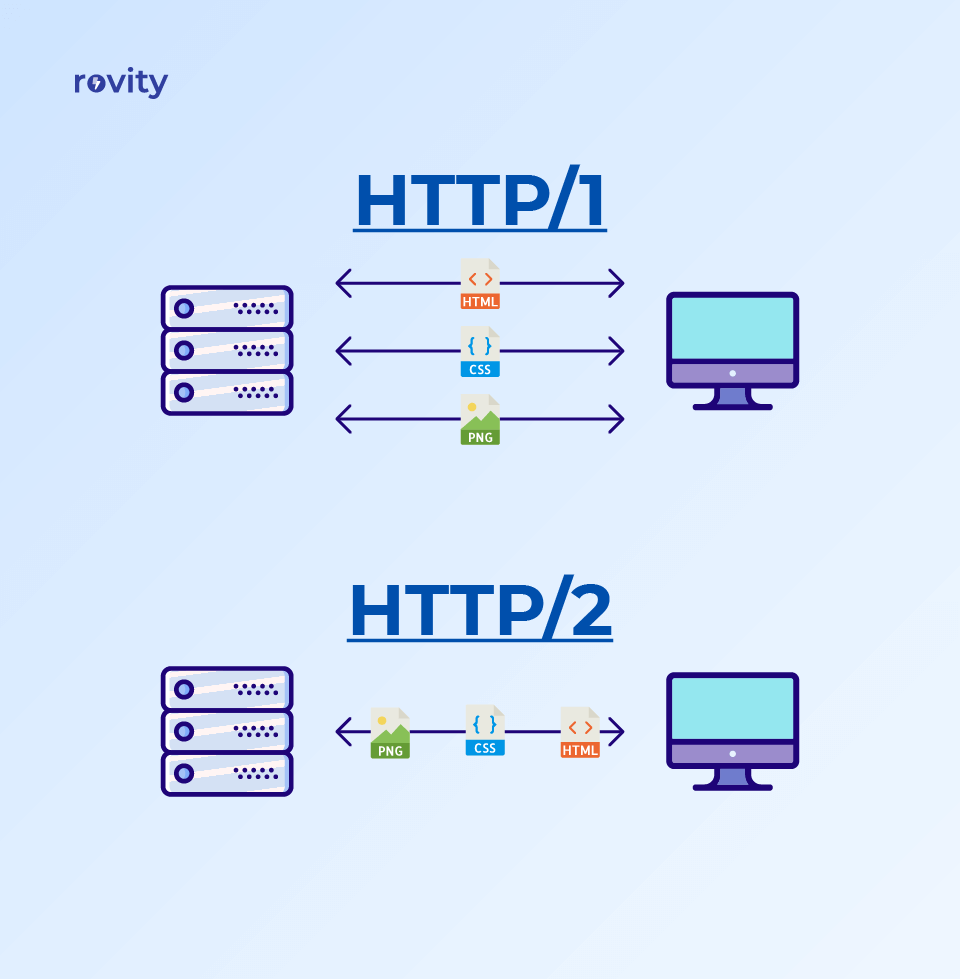

HTTP stand for Hypertext Transfer Protocol and it is used in client-server communication. By using HTTP user sends the request to the server & the server sends the response to the user.
| HTTP1.1 | HTTP2 |
|---|---|
| It compresses data by itself. | It works on the textual format |
| It uses HPACK for data compression. | It works on the binary protocol. |
when you make a request to the server for the google.html page & server responds to you as a resource google.html page. before sending the request and the response there is a TCP connection established between client & server. again you make a request to the server for image img.jpg & the server gives a response as an image img.jpg. the connection was not lost here after the first request because we add a keep-alive header which is the part of the request so there is an open connection between the server & client. there is a persistent connection which means several requests & responses are merged in a single connection. These are the drawbacks that lead to the creation of HTTP/2: The first problem is HTTP/1.1 transfer all the requests & responses in the plain text message form. The second one is head of line blocking in which TCP connection is blocked all other requests until the response does not receive. all the information related to the header file is repeated in every request.
HTTP/2 was developed over the SPDY protocol. HTTP/2 works on the binary framing layer instead of textual that converts all the messages in binary format. it works on fully multiplexed that is one TCP connection is used for multiple requests. HTTP/2 uses HPACK which is used to split data from header. it compresses the header. The server sends all the other files like CSS & JS without the request of the client using the PUSH frame.
JavaScript is designed on a simple object-based paradigm. An object is a collection of properties, and a property is an association between a name (or key) and a value. A property's value can be a function, in which case the property is known as a method.
A JavaScript object has properties associated with it. A property of an object can be explained as a variable that is attached to the object. Object properties are basically the same as ordinary JavaScript variables, except for the attachment to objects. The properties of an object define the characteristics of the object. We can access the properties of an object with a simple dot-notation:
objectName.propertyName
Example
var myCar = new Object(); myCar.make = 'Ford'; myCar.model = 'Honda'; myCar.year = 2020;
In this example also the comma-delimited list of zero or more pairs of property names and associated values of an object, enclosed in curly braces ({}):
var myCar = { make: 'Ford', model: 'Honda', year: 2020 };
obj.prop
obj[“prop”]